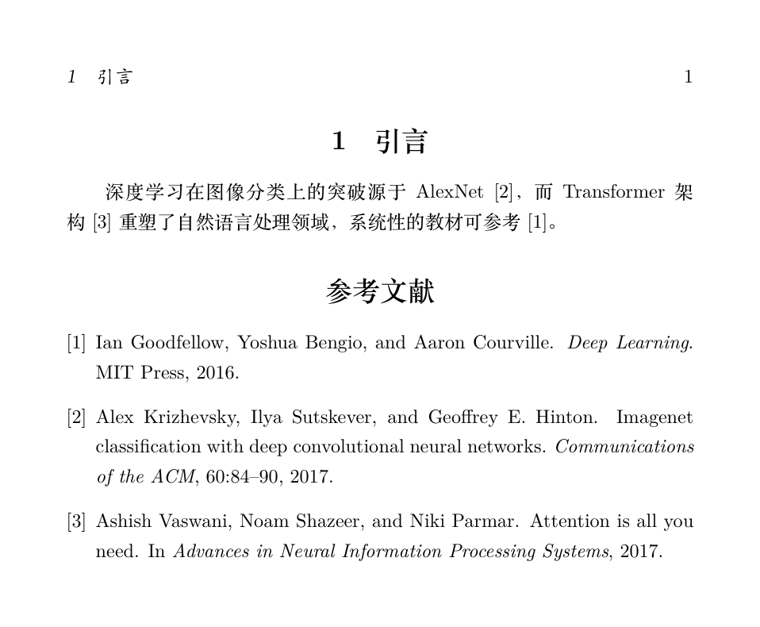
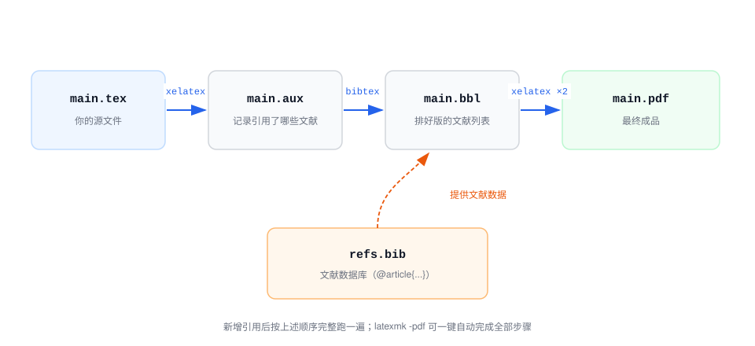

10. LaTeX 交叉引用与文献管理原文↗
长文档的两大自动化利器：交叉引用（章节、图表、公式之间互相指向）和参考文献管理（BibTeX）。
它们的共同哲学：编号永远是自动的，你只负责起一个「标签名」。
标签与引用：\label 与 \ref
交叉引用三步走：在被引用处 \label{标签} 打标签，在引用处 \ref{标签}（或 \pageref、\eqref）取编号。
| 命令 | 输出什么 | 典型搭配 |
|---|---|---|
| \label{key} | 无输出，给前面的对象打标签 | 紧跟 \section、\caption、equation |
| \ref{key} | 编号数字（如 3、1.2） | 第~\ref{sec:method} 节 |
| \eqref{key} | 带括号编号（如 (1)） | 式~\eqref{eq:loss}（公式专用） |
| \pageref{key} | 所在页码 | 见第~\pageref{sec:method} 页 |
\label 必须紧跟被引用的命令之后、写在同一个环境层级里——「\section{方法}\label{sec:m}」是正确姿势，把 \label 写到下一段去，引用到的就是错误的对象。公式的 \label 要写在 equation 环境内部。
实例：章节、公式、图片互引
\documentclass{ctexart}\usepackage{amsmath, graphicx}
\begin{document}
\section{方法}\label{sec:method}
本节介绍模型结构，损失函数见式~\eqref{eq:loss}，
实验分析见第~\ref{sec:result} 节。
\begin{equation}\label{eq:loss}
L = \sum_{i=1}^{n} \left( y_i - \hat{y}_i \right)^2
\end{equation}
\section{实验结果}\label{sec:result}
方法（第~\ref{sec:method} 节）的损失由式~\eqref{eq:loss} 度量，
曲线形态见图~\ref{fig:sin}。
\begin{figure}[htbp]
\centering
\includegraphics[width=0.5\textwidth]{sin}
\caption{正弦曲线}
\label{fig:sin}
\end{figure}
\end{document}

所有引用都自动取到了正确编号。之后不管插入多少新章节、新公式，编号与引用会自动更新——这是 Word 里「手动改编号改到崩溃」的终极解药。
标签命名建议「前缀:内容」，常用的前缀约定如下。
| 前缀 | 对象 | 示例 |
|---|---|---|
| sec: | 章节 | \label{sec:method} |
| fig: | 图 | \label{fig:sin} |
| tab: | 表 | \label{tab:result} |
| eq: | 公式 | \label{eq:loss} |
| chap: | 章（report/book） | \label{chap:intro} |
超链接：hyperref 宏包
加载 hyperref 后，所有 \ref、\cite、\url 自动变成可点击的链接，并在 PDF 里生成侧边书签栏。
实例：hyperref 常用配置
\usepackage[colorlinks=true, linkcolor=blue, % 正文引用：蓝色citecolor=blue, urlcolor=blue]{hyperref}
% colorlinks=true 用颜色标记链接（默认红框很难看）
% 三个参数分别控制：内部引用 / 文献引用 / 网址的颜色
\url{https://www.runoob.com} % 网址排版：自动断行、可点击
hyperref 几乎永远应该是导言区最后一个加载的宏包——它要等所有其他宏包就位后才能正确改造文档，放早了会莫名冲突。
参考文献：BibTeX 工作流
参考文献的正确姿势不是在文末手写列表，而是：文献信息存进 .bib 数据库，正文用 \cite 引用，BibTeX 程序自动生成格式化的文献列表。
先看文献数据库长什么样——每条文献是一个「条目」。
实例：refs.bib 文献数据库
@article{alexnet2012, % 条目类型：期刊论文author = {Krizhevsky, Alex and Sutskever, Ilya and Hinton, Geoffrey E.},
title = {ImageNet Classification with Deep Convolutional Neural Networks},
journal = {Communications of the ACM},
year = {2017},
volume = {60},
pages = {84--90}
}
@book{goodfellow2016, % 条目类型：图书
author = {Goodfellow, Ian and Bengio, Yoshua and Courville, Aaron},
title = {Deep Learning},
publisher = {MIT Press},
year = {2016}
}
花括号里第一项是引用键（如 alexnet2012），正文里 \cite{alexnet2012} 就靠它找到这条文献；键名随意，但全文唯一。
| 条目类型 | 对应文献 | 关键字段 |
|---|---|---|
| @article | 期刊论文 | author、title、journal、year |
| @inproceedings | 会议论文 | author、title、booktitle、year |
| @book | 图书 | author/editor、title、publisher、year |
| @phdthesis | 博士论文 | author、title、school、year |
| @misc / @online | 网页、报告等 | title、url、note、year |
正文侧只有两条命令，放在文档末尾：
实例：引用与生成文献列表
\documentclass{ctexart}\begin{document}
深度学习的突破源于 AlexNet~\cite{alexnet2012}，
系统教材可参考~\cite{goodfellow2016}。
\bibliographystyle{plain} % 文献样式：plain 数字序号风格
\bibliography{refs} % 文献数据库文件（不带 .bib 扩展名）
\end{document}

引用处自动出现 [1]、[2]，文末自动生成按引用顺序排列的文献列表——你没写过一行格式。
为什么要编译四遍
加了 BibTeX 之后，完整的编译变成四步，文件之间形成一条流水线。

| 步骤 | 命令 | 作用 |
|---|---|---|
| 1 | xelatex main | 生成 main.aux，记录正文引用了哪些键 |
| 2 | bibtex main | 读 .aux 与 refs.bib，生成 main.bbl 文献列表 |
| 3 | xelatex main | 把 .bbl 内容排进文档 |
| 4 | xelatex main | 引用编号稳定，显示正确 |
引用显示成 [?] 的原因就藏在这条流水线里：没跑 bibtex、或跑完没再编译两遍。Overleaf 会自动帮你跑完全部步骤，本地推荐用 latexmk -pdf main.tex 一键代劳。
BibLaTeX：更现代的选择
BibTeX 是 1985 年的老将，后继者 biblatex（配合程序 biber）在中文场景下更值得了解。
| 维度 | BibTeX | biblatex + biber |
|---|---|---|
| 诞生时间 | 1985 | 2009 起 |
| Unicode / 中文 | 支持有限 | 原生 UTF-8 |
| 样式定制 | 需写 .bst 文件，门槛高 | LaTeX 语法，直观 |
| 中文国标 | 需配置，较繁琐 | biblatex-gb7714-2015 宏包直接支持 |
| 适用建议 | 老模板、期刊指定时用 | 新项目、中文论文优先 |
实例：biblatex 基本用法
\usepackage[backend=biber, style=numeric]{biblatex} % backend 指定 biber\addbibresource{refs.bib} % 注意带 .bib 扩展名
\begin{document}
深度学习的突破源于 AlexNet~\cite{alexnet2012}。
\printbibliography[title=参考文献] % 文档末尾打印文献列表
\end{document}
命令从 bibtex 换成 biber，其余编译流水线完全相同。写中文毕业论文时，装上 biblatex-gb7714-2015 宏包、把 style 换成 gb7714-2015，即可满足国标著录格式。
小结
| 需求 | 命令 |
|---|---|
| 打标签 | \label{前缀:名字}（紧跟被引用对象） |
| 引用编号 / 页码 / 公式 | \ref、\pageref、\eqref |
| 超链接 | hyperref（最后加载） |
| 引用文献 | \cite{键名}，文献存 .bib 数据库 |
| 生成文献列表 | BibTeX：\bibliography；biblatex：\printbibliography |
| 一键编译 | latexmk -pdf main.tex |